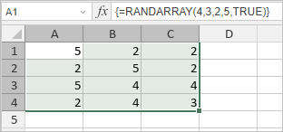

RANDARRAY funkcija
RANDARRAY funkcija je jedna od matematičkih i trigonometrijskih funkcija. Koristi se za vraćanje niza nasumičnih brojeva i može se konfigurirati da popuni određeni broj redova i kolona, postavi opseg vrednosti ili vrati celobrojne/decimalne vrednosti.
Sintaksa
RANDARRAY([rows], [columns], [min], [max], [whole_number])
RANDARRAY funkcija ima sledeće argumente:
| Argument | Opis |
|---|---|
| rows | Opcioni argument koji određuje broj redova koji će biti vraćeni. Ako se ne unese, funkcija vraća vrednost između 0 i 1. |
| columns | Opcioni argument koji određuje broj kolona koji će biti vraćeni. Ako se ne unese, funkcija vraća vrednost između 0 i 1. |
| min | Opcioni argument koji određuje minimalni broj koji će biti vraćen. Ako se ne unese, podrazumevana vrednost je između 0 i 1. |
| max | Opcioni argument koji određuje maksimalni broj koji će biti vraćen. Ako se ne unese, podrazumevana vrednost je između 0 i 1. |
| whole_number | Opcioni argument TRUE ili FALSE. Ako je TRUE, funkcija vraća celobrojnu vrednost; ako je FALSE, vraća decimalnu vrednost. |
Napomene
Napomena: ovo je niz formula. Da biste saznali više, pročitajte Članak o umetanja niz formula.
Kako primeniti RANDARRAY funkciju.
Primeri
Slika ispod prikazuje rezultat koji vraća RANDARRAY funkcija.
